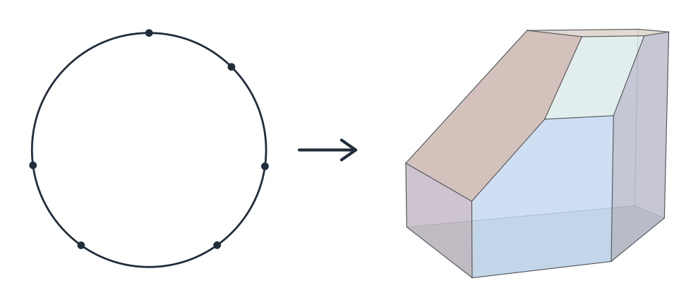
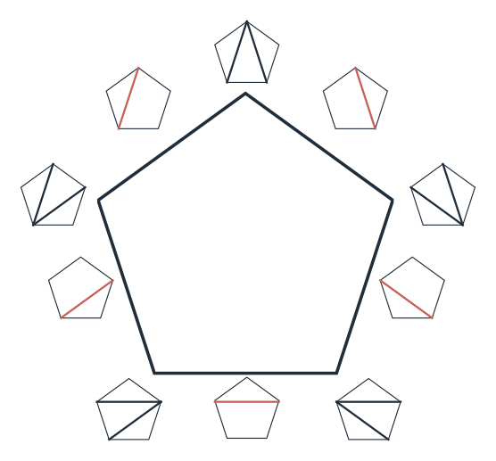
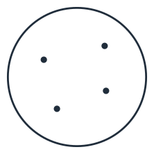
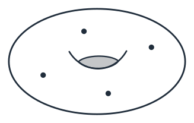

Form factors & Higgs · Positive geometry & clusters
THEORETICAL PHYSICS
探寻自然的 深层结构
从散射振幅到几何，探索基本相互作用背后的结构。
散射振幅等物理量量子场论量子引力与弦论基础物理 × 数学
01 / RESEARCH
基础物理与数学交叉




科学图像选自何颂研究报告，点击可放大查看。
02 / ABOUT & CV
学术经历
何颂，中国科学院理论物理研究所研究员。研究量子场论、散射振幅、弦论及其数学结构。
教育与任职
2015 — 至今
中国科学院理论物理研究所
副研究员、研究员
2012 — 2015
Perimeter 理论物理研究所、普林斯顿高等研究院
联合博士后
2009 — 2012
德国马普引力物理研究所
博士后 · Albert Einstein Institute
2005 — 2009
北京大学
理论物理博士
2002 — 2005
北京大学
天文学与物理学（数学双学位）
多次获中科院优秀导师（2023、2025、2026 等），指导学生获优秀学生、优秀博士论文等荣誉。
03 / RESEARCH & PUBLICATIONS
研究方向与代表论文
按主题浏览研究方向，展开查看近期与代表性论文。
论文日期为 arXiv 首次提交日期；修订时间另列。
选录更新至
高圈振幅：Bootstrap 与 Q̄
结合 bootstrap、Q̄ 方程与解析结构，研究量子场论中的高圈、多粒子振幅。从 N = 4 SYM 的符号字母表与微分约束，到 ABJM 的圈积分，寻找复杂计算背后的简洁组织原则。
另有数据更新 · 2026.09.17九圈六胶子 MHV 符号
选录更新至
形状因子与 Higgs 振幅
从局域算符插入到重顶夸克有效理论中的 Higgs 与多部分子振幅，研究形状因子和散射振幅的共同结构。关注连接公式、图形自举、符号字母表，以及形状因子与振幅之间的反足对偶。
选录更新至
关联函数的数学与物理：截面与能量关联
从时空关联函数、振幅平方到散射截面与能量关联，研究可观测量如何由几何、图结构和相空间积分组织起来。结合 f-图自举与正几何，探索高圈关联函数及其与实验可观测量的联系。
选录更新至
正几何、簇代数与振幅多面体
用几何区域及其典范形式理解散射振幅，研究振幅多面体、正 Grassmannian 与簇代数之间的联系。从 SYM 到 ABJM，关注几何的边界、剖分、圈结构与符号字母表。
选录更新至
弦论振幅与散射方程
散射方程把粒子振幅、弦论世界面与场论极限联系起来。围绕 CHY 公式、弦积分和世界面关联函数，研究不同粒子理论的统一表示，以及树级到圈级的延伸。
选录更新至
引力振幅与经典物理
研究引力振幅的双拷贝结构、软定理及其与经典物理的联系，探索振幅方法在不同物理系统中的应用。近期的 Hydrotope 工作把多面体结构带入经典水波作用量，为几何与可感知的波动建立新的联系。
选录更新至
组合几何：多面体、曲面与现实物理
从关联多面体、弦型典范形式到曲面、标量支架与隐藏零点／分裂，探索粒子相互作用的组合几何起源。这里集中呈现与 Nima Arkani-Hamed 等合作者发展的系列工作，以及它们与 Yang–Mills、非线性 σ 模型和弦振幅的联系。
选录更新至
Mellin 振幅与 AdS/CFT
以 Mellin 振幅组织 AdS 中的相互作用与边界共形场论的关联函数，研究因子化、可构造性及带自旋算符的结构。通过标量支架等方法，连接全息对偶与平直时空散射中的简洁性。
选录更新至
费曼积分：奇点、符号与周期
从 Landau 奇点与 Schubert 几何出发，识别符号字母表和微分方程，探索费曼积分的系统计算。研究范围包括多重多对数、椭圆与 Calabi–Yau 结构，以及共形积分和周期之间的联系。
选录更新至
宇宙学：波函数与时空关联
把振幅的解析方法带入演化的宇宙，研究 de Sitter 波函数与 in-in 关联函数。通过宇宙学切割、微分方程、递推和热带／弦型积分，寻找时空演化中相互作用的简洁描述。
全部选录
按首次提交日期排列，连接近期进展与奠基工作。
查看选录论文
arXiv
Gravity & classical physics
The Hydrotope in the Water-Wave Action
Cosmology & wavefunctions
Tropical and Stringy Integrals for In-In Correlators
Cosmology & wavefunctions
From Cosmological Cuts to Yang--Mills Wavefunctions in de Sitter Space
Correlators & observables
Bootstrapping Giant Graviton Correlators
Cosmology & wavefunctions
On the simplicity of de Sitter correlators
Mellin amplitudes & AdS/CFT · Combinatorial geometry
Hidden simplicity in AdS spinning Mellin amplitudes via scaffolding
Correlators & observables
Loops and legs: ABJM amplitudes from f-graphs
Higher-loop amplitudes
Heptagon Symbols at Five Loops and All-Loop Sequences
Gravity & classical physics · Strings & scattering equations
Loop-Level Double Copy Relations from Forward Limits
Correlators & observables
A Hidden Permutation Symmetry of Squared Amplitudes in ABJM Theory
Form factors & Higgs
Bootstrapping form factor squared in N = 4 super-Yang-Mills
Correlators & observables · Positive geometry & clusters
Leading singularities and chambers of Correlahedron
Combinatorial geometry · Strings & scattering equations
Superstring amplitudes meet surfaceology
Correlators & observables
The Four-Point Correlator of Planar sYM at Twelve Loops
Feynman integrals
Notes on conformal integrals: Coulomb branch amplitudes, magic identities and bootstrap
Strings & scattering equations
On one-loop amplitudes in gauge theories
Feynman integrals
Landau-based Schubert analysis
Correlators & observables
The Cusp Limit of Correlators and A New Graphical Bootstrap for Correlators/Amplitudes to Eleven Loops
Combinatorial geometry
Surface Kinematics and "The" Yang-Mills Integrand
Correlators & observables
From squared amplitudes to energy correlators
Cosmology & wavefunctions
Differential equations and recursive solutions for cosmological amplitudes
Mellin amplitudes & AdS/CFT
Supergluon scattering in AdS: constructibility, spinning amplitudes, and new structures
Combinatorial geometry · Strings & scattering equations
On universal splittings of tree-level particle and string scattering amplitudes
Correlators & observables · Positive geometry & clusters
All-loop geometry for four-point correlation functions
Combinatorial geometry · Strings & scattering equations
A universal splitting of string and particle scattering amplitudes
Combinatorial geometry
NLSM ⊂ Tr(φ³)
Combinatorial geometry
Scalar-Scaffolded Gluons and the Combinatorial Origins of Yang-Mills Theory
Combinatorial geometry
Hidden zeros for particle/string amplitudes and the unity of colored scalars, pions and gluons
Mellin amplitudes & AdS/CFT
Constructibility of AdS supergluon amplitudes
Feynman integrals
On symbology and differential equations of Feynman integrals from Schubert analysis
Positive geometry & clusters
The ABJM Amplituhedron
Feynman integrals
Jumpstarting (elliptic) symbol integrations for loop integrals
Positive geometry & clusters · Higher-loop amplitudes
Emergent unitarity, all-loop cuts and integrations from the ABJM amplituhedron
Feynman integrals
Cutting the traintracks: Cauchy, Schubert and Calabi-Yau
Higher-loop amplitudes
The two-loop eight-point amplitude in ABJM theory
Gravity & classical physics
Perfecting one-loop BCJ numerators in SYM and supergravity
Higher-loop amplitudes
A nice two-loop next-to-next-to-MHV amplitude in N = 4 super-Yang-Mills
Form factors & Higgs
New relations for tree-level form factors and scattering amplitudes
Feynman integrals
The symbology of Feynman integrals from twistor geometries
Positive geometry & clusters · Higher-loop amplitudes
All-Loop Four-Point Aharony-Bergman-Jafferis-Maldacena Amplitudes from Dimensional Reduction of the Amplituhedron
Feynman integrals · Positive geometry & clusters
Kinematics, cluster algebras and Feynman integrals
Positive geometry & clusters · Strings & scattering equations
The momentum amplituhedron of SYM and ABJM from twistor-string maps
Higher-loop amplitudes · Feynman integrals
Comments on all-loop constraints for scattering amplitudes and Feynman integrals
Higher-loop amplitudes · Positive geometry & clusters
Bootstrapping octagons in reduced kinematics from A₂ cluster algebras
Higher-loop amplitudes
The symbol and alphabet of two-loop NMHV amplitudes from Q̄ equations
Combinatorial geometry · Positive geometry & clusters
Cluster Configuration Spaces of Finite Type
Combinatorial geometry · Positive geometry & clusters
Causal Diamonds, Cluster Polytopes and Scattering Amplitudes
Combinatorial geometry · Positive geometry & clusters
Binary Geometries, Generalized Particles and Strings, and Cluster Algebras
Combinatorial geometry · Positive geometry & clusters · Strings & scattering equations
Stringy Canonical Forms
Higher-loop amplitudes
Two-loop Octagons, Algebraic Letters and Q̄ Equations
Strings & scattering equations
String Correlators: Recursive Expansion, Integration-by-Parts and Scattering Equations
Strings & scattering equations
String amplitudes from field-theory amplitudes and vice versa
Combinatorial geometry · Positive geometry & clusters · Strings & scattering equations
Scattering Forms and the Positive Geometry of Kinematics, Color and the Worldsheet
Gravity & classical physics
New Relations for Gauge-Theory and Gravity Amplitudes at Loop Level
Form factors & Higgs
A note on connected formula for form factors
Form factors & Higgs · Strings & scattering equations
Connected formulas for amplitudes in standard model
Positive geometry & clusters
The Amplituhedron and the One-loop Grassmannian Measure
Strings & scattering equations · Gravity & classical physics
Scattering Equations and Matrices: From Einstein To Yang-Mills, DBI and NLSM
Positive geometry & clusters
The Amplituhedron from Momentum Twistor Diagrams
Gravity & classical physics
More on Soft Theorems: Trees, Loops and Strings
Strings & scattering equations · Gravity & classical physics
Scattering of Massless Particles: Scalars, Gluons and Gravitons
Strings & scattering equations
Scattering of Massless Particles in Arbitrary Dimension
Strings & scattering equations · Gravity & classical physics
Scattering Equations and KLT Orthogonality
Higher-loop amplitudes
Three-loop octagons and n-gons in maximally supersymmetric Yang-Mills theory
Gravity & classical physics
A Link Representation for Gravity Amplitudes
Higher-loop amplitudes
Jumpstarting the all-loop S-matrix of planar N = 4 super Yang-Mills
Higher-loop amplitudes
On All-loop Integrands of Scattering Amplitudes in Planar N=4 SYM
04 / DATA & CODE
数据与代码
研究中的公开数据、符号结果与计算工具。
AMPLITUDES · FORM FACTORS · SYMBOLS
振幅与形状因子的高圈符号
高圈 symbol 数据与相关计算资源。
arXiv:2503.15593
十二圈关联函数积分核与 f-图
图数据、Mathematica 工具与示例
COSMOLOGY · arXiv:2606.25878 / 2604.26421
宇宙学波函数与关联函数
de Sitter 杨–米尔斯5、6点结果，以及关联函数的符号数据与 notebook。
arXiv:2602.05568
AdS Mellin 与 scaffolding
源码包内含 scaffolding_mellin_results.wl
arXiv:2408.11891
Surface kinematics
树级与单圈结果，以及演示 notebook
05 / PEOPLE & COLLABORATION
与人一起，把问题想深
何颂研究组 · 中国科学院理论物理研究所 · 2016 至今。共同提出问题，认真推敲计算，也寻找新的理解方式。
POSTDOCTORAL RESEARCHERS
现有博士后
- 姜旭航
- 施灿欣
- 莫裕宇
- Chandramouli Chowdhury
往届博士后包括苏宁（清华大学丘成桐数学科学中心，YMSC）、赵鹏等。
GRADUATE STUDENTS
现有研究生
- 刘家昊
- 李想
- 朱凡
- 杨东昱
- 韩振琦
- 苏永祥
- 景继荣
- 李秋鹏
DOCTORAL ALUMNI
部分毕业博士生
张勇
宁波大学 · 教授
张驰
东南大学
李振杰
SLAC · 博士后
杨清霖
德国马普物理研究所 · 高级博士后
曹趣
西湖大学 · Fellow
与浙江大学物理学院联合培养
董晋
德国马普物理研究所 · 博士后
张耀奇
英国赫特福德大学（University of Hertfordshire） · 博士后
唐一朝
布朗大学、宾夕法尼亚州立大学 · 联合博士后
加入我们 · 访问与联合培养
欢迎来组里访问
欢迎有志于上述研究方向的本科生、研究生，来组里开展短期至中长期访问。
研究组长期接待访问学生，并参与博士生联合培养。欢迎就博士后机会、科研访问及合作联系交流。